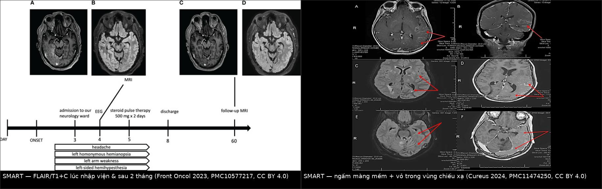
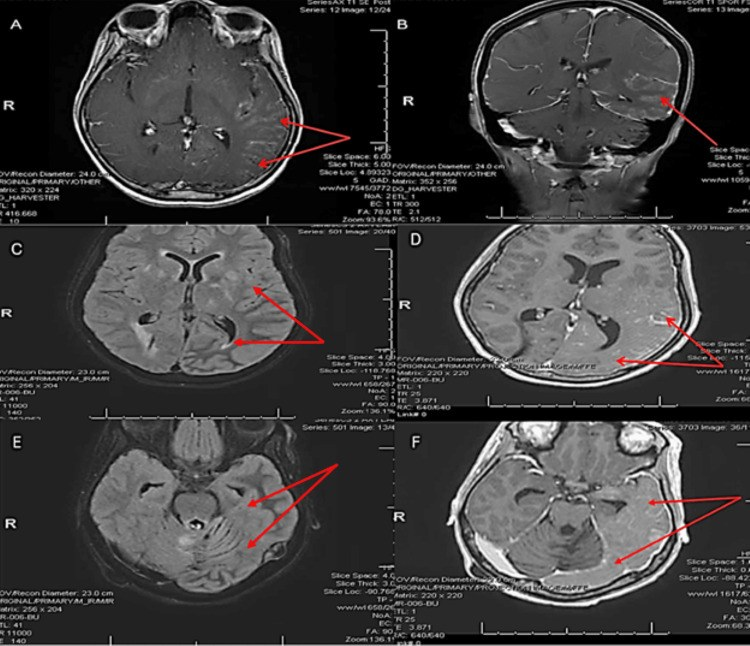
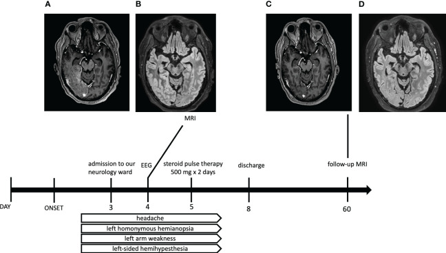
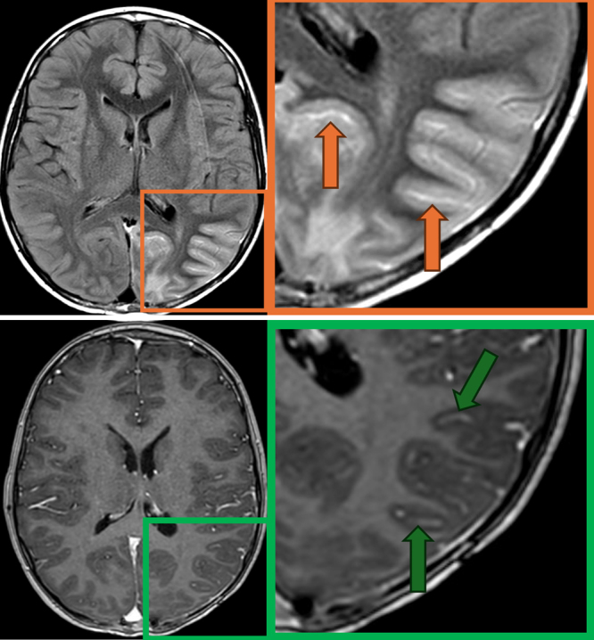
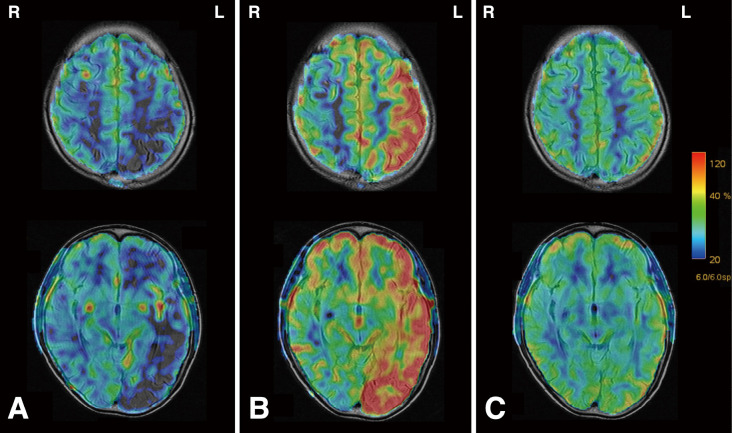

259 — Hội chứng SMART: cơn giống đột quỵ – đau nửa đầu sau xạ trị não / Stroke-like migraine attacks after radiation therapy (SMART) syndrome
Tags: pattern:ngam-mang-me pattern:ngam-vo-dang-cuon pattern:phu-vo-nao pattern:khong-theo-lanh-tho-mach vung:vo-nao vung:thai-duong-dinh-cham protocol:MRI-nao protocol:MRV protocol:ASL protocol:EEG
Mức chắc chắn (certainty): tổng hợp y văn (literature synthesis) — 3 ca nguyên văn có ảnh (Front Oncol 2023, PMC10577217; Cureus 2024, PMC11474250; J Neurosurg Case Lessons 2025, PMC12105588) + 1 ca có ASL động (NMC Case Rep J 2024, PMC11165263) + 1 ca có DSC-rCBV theo dõi dọc (Front Oncol 2026, PMC13521836) + tổng quan biến chứng muộn sau xạ (Insights Imaging 2018, PMC6269328) + loạt 15 ca nhi (PMC12105588). Không có thử nghiệm ngẫu nhiên nào; mọi ngưỡng xử trí là tổng hợp thực hành, chỗ nào là suy luận được ghi rõ.
Câu chốt: SMART là chẩn đoán loại trừ bằng bệnh sử + hình ảnh: bệnh nhân đã xạ trị não từ nhiều năm trước, nay đau đầu kiểu migraine + cơn giống đột quỵ + co giật, MRI cho ngấm vỏ–màng mềm dạng cuộn MỘT BÊN, nằm ĐÚNG trong vùng chiếu xạ, KHÔNG theo lãnh thổ mạch, và tự hồi phục. Hai ngưỡng phải thuộc: khởi phát 1–37 năm sau xạ (trung bình 9,5 năm; trung vị 14 năm) và ngấm thuốc xuất hiện trong tuần đầu, tan trong ~1 tháng (có thể tới 3 tháng). Sai lầm chết người không phải bỏ sót SMART mà là gọi SMART là tái phát u và xạ lại/sinh thiết não — hoặc gọi là mủ màng não (LMD) và mở tháo shunt.
1. Tổng quan bệnh học – cơ chế hình ảnh
1.1 Bệnh học: tổn thương muộn của mạch–hàng rào máu não trong trường chiếu
- SMART được mô tả lần đầu 1995 ở trẻ, nay chủ yếu gặp ở người lớn; giới nam nhiều hơn nữ ~2,2 : 1 (Insights Imaging 2018, PMC6269328). Y văn chủ yếu là ca lẻ và loạt nhỏ (~100–200 ca tích lũy) — không có tần suất quần thể, nên đừng trích "1%" khi chưa có nguồn.
- Liều xạ điển hình 50–64 Gy; đã có ca sau 16,2 Gy (loạt nhi) và ca sau xạ toàn não — liều thấp KHÔNG loại trừ SMART.
- Ba giả thuyết cơ chế, không loại trừ nhau:
- Nội mô – tự điều hòa mạch: xạ gây hại nội mô muộn → mất tự điều hòa, rò hàng rào máu não → phù vận mạch vỏ + ngấm thuốc (giống PRES nhưng khu trú đúng trường chiếu).
- Trục trigeminovascular – cortical spreading depression: ngưỡng lan truyền vỏ giảm → cơn migraine kèm thiếu hụt thần kinh thoáng qua.
- Cơ chế do cơn động kinh: co giật gây phù vỏ sau cơn (peri-ictal) — nhưng một nửa số ca SMART không có phóng điện động kinh trên EEG (dẫn trong PMC10577217), nên động kinh là bạn đồng hành, không phải nguyên nhân duy nhất.
1.2 TẠI SAO hình ảnh trông như vậy (vật lý + mô bệnh)
- FLAIR/T2 sáng dạng cuộn theo vỏ + vỏ dày nhẹ: phù vận mạch (vasogenic) trong chất trắng dưới vỏ và vỏ — nước ngoại bào tăng → T2/FLAIR sáng, không phá vỡ cấu trúc vỏ như nhồi máu.
- Ngấm thuốc dạng cuộn (gyriform) + màng mềm: rò hàng rào máu não ở mao mạch vỏ/màng mềm → gadolinium thoát vào khoang ngoại bào. Vì tổn thương bám theo vỏ, thuốc ngấm thành dải uốn theo hồi não, không thành ổ tròn như u.
- DWI: phần lớn là T2 shine-through — DWI sáng nhưng ADC không giảm (phù vận mạch làm khuếch tán tăng). ADC giảm thật chỉ xuất hiện ở ca có hạn chế khuếch tán nhẹ hoặc khi có nhồi máu/động kinh kéo dài đi kèm → ADC là câu trả lời cho "SMART hay nhồi máu".
- Tưới máu: báo cáo không đồng nhất — ASL có thể giảm tưới máu lúc khởi phát rồi chuyển sang tăng tưới máu trong vài ngày (NMC Case Rep J 2024, PMC11165263), trong khi ca theo dõi dọc bằng DSC-rCBV cho rCBV bình thường đến giảm nhẹ, không tăng khu trú (Front Oncol 2026, PMC13521836). Bài học: đừng dùng tăng tưới máu để chốt SMART, và đừng dùng nó để chốt tái phát u.
1.3 Ngưỡng định lượng bắt buộc nhớ
| Đại lượng | Con số | Nguồn |
|---|---|---|
| Thời gian tiềm tàng (latency) | 1–37 năm, trung bình 9,5 năm; trung vị 14 năm | PMC10577217 / PMC12105588 |
| Latency ở trẻ | 4 tháng – 10 năm (15 ca, 5–17 tuổi) | PMC12105588 |
| Liều xạ | thường 50–64 Gy; trẻ 16,2–60 Gy | PMC6269328 / PMC12105588 |
| Thiếu hụt thần kinh khu trú | 33–74% | PMC6269328 |
| Co giật | 70–82% | PMC6269328 |
| Thời điểm ngấm thuốc | xuất hiện trong tuần đầu, tan ~1 tháng, có thể tới 3 tháng | PMC8645481 (dẫn Black) |
| Kết cục trẻ | 7/15 hồi phục hoàn toàn, 8/15 hồi phục một phần | PMC12105588 |
2. Mẫu hình + chẩn đoán phân biệt theo vị trí (Gamut)
Mẫu hình chốt: ngấm vỏ–màng mềm dạng cuộn, MỘT BÊN, ưu thế vùng đỉnh–chẩm–thái dương, nằm trong trường chiếu cũ, không theo lãnh thổ mạch, hồi phục trên phim chụp lại.
Gamut theo vị trí + bối cảnh:
- Trong trường chiếu xạ, có tiền sử xạ não: SMART · hoại tử xạ (radiation necrosis) · tái phát u/pseudoprogression · bệnh mạch máu do xạ (hẹp–tắc, moyamoya) · leukoencephalopathy do xạ.
- Không theo lãnh thổ mạch, đối xứng hoặc nhiều ổ: PRES · bệnh não do thuốc · bệnh ty thể (MELAS) · viêm màng não–não tự miễn/nhiễm trùng.
- Ngấm màng mềm lan tỏa: LMD (di căn màng não) · viêm màng não do thuốc · SMART — đây là bẫy lớn nhất, vì cả ba đều "ngấm màng mềm".
- Khởi phát cấp, có cơn co giật: trạng thái động kinh không co giật / liệt Todd · nhồi máu cấp · huyết khối xoang tĩnh mạch não.
- Gợi nhớ SMART: Stroke-like deficits · Migraine · After Radiation · Transient (và Territory-sparing).
3. Bảng so sánh phân biệt (ma trận đối chiếu)
| Thực thể (entity) | Hình ảnh điển hình | Chốt vào (rule-in) | Chốt loại (rule-out) | Gợi ý xác nhận |
|---|---|---|---|---|
| SMART | FLAIR sáng + ngấm vỏ–màng mềm dạng cuộn một bên, trong trường chiếu, không theo lãnh thổ mạch, hồi phục | Vị trí đúng trường chiếu + hồi phục trong 4–12 tuần + bệnh sử xạ não nhiều năm | Ngấm thuốc lan ngoài trường chiếu hoặc nốt đặc trong lòng → nghĩ u/LMD | MRI + cản từ lúc cấp và chụp lại 4–12 tuần; CSF âm tính |
| Tái phát u / pseudoprogression | Khối đặc, ngấm thuốc dạng nốt/ổ, có hiệu ứng khối, lan ra ngoài trường chiếu | Ổ đặc + phù quanh ổ + lớn dần trên phim nối tiếp | Ngấm dạng cuộn theo vỏ, không có ổ đặc, tan dần → SMART | MRI 3–4 tuần + MR spectroscopy/PET; sinh thiết chỉ khi vẫn tiến triển |
| Hoại tử xạ | Ổ "bơ" (soap-bubble), ngấm viền/vòng, T2 hỗn hợp, thường đỉnh liều | Viền ngấm + hoại tử trung tâm + đỉnh liều trong kế hoạch xạ | Ngấm vỏ dạng cuộn một dải dài → SMART | MRI đa chuỗi + lịch sử liều; PET/DSC |
| PRES | Phù đối xứng hai bên đỉnh–chẩm, không bám trường chiếu, thường có tăng HA/thuốc | Đối xứng + tăng huyết áp/thuốc ức chế miễn dịch | Một bên, đúng trường chiếu, tiền sử xạ → SMART | Theo dõi huyết áp, ngừng thuốc; xem 3031 |
| LMD (di căn màng não) | Ngấm màng mềm lan tỏa, nhiều tầng, có nốt màng mềm, không tự tan | Tế bào ác tính trong CSF / nốt màng mềm / lan theo rễ | CSF âm tính + tan sau vài tuần + không nốt → SMART | CSF tế bào học (làm 1–2 lần), MRI tủy |
| Trạng thái động kinh / liệt Todd | Phù vỏ quanh ổ động kinh, có thể hạn chế khuếch tán nhẹ | EEG có phóng điện + đáp ứng thuốc chống động kinh | EEG không phóng điện + phù kéo dài vài tuần → SMART | EEG kéo dài, theo dõi sau cắt cơn |
| Nhồi máu cấp | ADC giảm thật, theo lãnh thổ mạch, vỏ + chất trắng | ADC tối + lãnh thổ mạch | ADC không giảm + bám trường chiếu → SMART | DWI/ADC, MRA |

Trái: FLAIR/T1+C lúc nhập viện và sau 2 tháng — ngấm vỏ thái dương–chẩm phải, tan gần hoàn toàn. Phải: ngấm màng mềm + vỏ thái dương–đỉnh–chẩm trái theo đúng trường chiếu. Cả hai đều CC BY 4.0, ảnh ghép letterbox.
Ngấm màng mềm và vỏ thái dương–đỉnh–chẩm trái (A–F, mũi tên đỏ) ở bệnh nhân đã xạ sọ–tủy; CSF âm tính và tổn thương tan sau corticoid. Nguồn: Cureus 2024, PMC11474250, CC BY 4.0.Ba dấu hiệu chốt (đọc theo thứ tự)
- Vị trí có nằm trong trường chiếu cũ không? Nếu có → nghĩ SMART trước u. Nếu tổn thương vượt qua đường giữa/lan xa trường chiếu → nghĩ u/LMD.
- Có ổ đặc trong lòng hay chỉ một dải vỏ? Chỉ dải vỏ → SMART. Có ổ đặc + phù quanh ổ → u/hoại tử.
- Có hồi phục trên phim chụp lại không? Đây là tiêu chuẩn bắt buộc của Black; không chụp lại = không được chốt SMART.
4. Protocol chụp + hệ phân độ/điểm chuẩn hóa
- MRI não 1,5T hoặc 3T, tối thiểu: T1W, T2W, FLAIR, DWI + ADC, T1W sau gadolinium (lát mỏng ≤ 3 mm qua vùng nghi), MRV (loại huyết khối xoang), MRA/TOF khi nghi bệnh mạch do xạ.
- Thêm khi còn chẩn đoán mở: ASL (tưới máu không cản từ) hoặc DSC-rCBV; MR spectroscopy khi nghi hoại tử/u; MRI tủy khi nghi LMD.
- Thời điểm: chụp ngay trong tuần đầu (ngấm thuốc rõ nhất) và chụp lại 4–12 tuần (bắt buộc để chứng minh hồi phục). Nếu vẫn tiến triển sau 12 tuần → không còn là SMART, phải tìm u/hoại tử.
- EEG kéo dài khi có rối loạn ý thức/cơn lặp lại: một nửa ca SMART không có phóng điện, nên EEG âm không loại trừ; nhưng EEG bắt được trạng thái động kinh không co giật (bệnh cảnh dễ nhầm).
- CSF khi có ngấm màng mềm lan tỏa: tế bào học + protein + cấy + PCR — để loại LMD/nhiễm trùng; trong SMART CSF bình thường.
- Không có hệ phân độ/RADS cho SMART (khác Fleischner/Lung-RADS). Tiêu chuẩn dùng là Black 2006:
flowchart TD
A[Đau đầu + cơn giống đột quỵ + co giật ở BN đã xạ não] --> B{Tiền sử xạ não ≥ 1 năm, không có u tồn tại?}
B -->|Không| Z[Không phải SMART - tìm nguyên nhân khác]
B -->|Có| C[MRI + cản từ + DWI/ADC + MRV]
C --> D{Ngấm vỏ-màng mềm dạng cuộn, MỘT BÊN, trong trường chiếu?}
D -->|Không| E[DDx: u tái phát, hoại tử xạ, PRES, LMD, nhồi máu]
D -->|Có| F{ADC giảm thật theo lãnh thổ?}
F -->|Có| G[Nghĩ nhồi máu - MRA + điều trị đột quỵ]
F -->|Không| H{CSF và tế bào học âm tính?}
H -->|Không| I[Nghĩ LMD/nhiễm trùng - điều trị theo nguyên nhân]
H -->|Có| J[Chẩn đoán SMART - corticoid + chống động kinh]
J --> K[Chụp lại MRI 4-12 tuần]
K -->|Tan tổn thương| L[Xác nhận SMART - theo dõi tái phát]
K -->|Không tan/tiến triển| M[Không phải SMART - sinh thiết/PET]
Điều trị (không có chuẩn hóa):
- Corticoid là lựa chọn được báo cáo nhiều nhất: ca người lớn dùng methylprednisolone 500 mg × 2 ngày rồi giảm liều (PMC10577217); ca nhi dùng methylprednisolone 30 mg/kg/ngày × 5 ngày, cải thiện trong 24 giờ (PMC12105588).
- Chống động kinh khi có cơn (levetiracetam, lacosamide…), cân nhắc cai sau 6–12 tháng không cơn.
- Dự phòng tái phát: có báo cáo dùng verapamil cho các ca tái diễn (PMC10577217) — bằng chứng ca lẻ, không phải khuyến cáo mạnh.
- TUYỆT ĐỐI tránh: xạ lại vào vùng tổn thương khi chưa loại trừ SMART; sinh thiết não "để chắc" khi hình ảnh điển hình + CSF âm tính.
5. Biến thể bình thường và cạm bẫy
- Ngấm màng mềm sau mổ/màng cứng nhân tạo ở bệnh nhân đã mổ u: ngấm khu trú tại vết mổ, không theo vỏ — đừng gọi LMD, cũng đừng gọi SMART.
- Ngấm màng mềm ở hố sau có thể là bình thường giả do mạch máu màng mềm; ca SMART ở trẻ có ngấm màng mềm lan rộng nhưng TIỂU NÃO KHÔNG ngấm — chi tiết này giúp loại LMD (PMC11474250).
- Co giật đơn thuần (liệt Todd) gây phù vỏ thoáng qua giống hệt SMART về hình ảnh; khác biệt nằm ở tiền sử xạ + vị trí đúng trường chiếu + tái diễn nhiều đợt.
- Bệnh nhân có shunt não thất: đau đầu + nôn + lừ đừ dễ bị gán "shunt hỏng" và mổ thăm dò shunt; nếu não thất không giãn thêm và MRI có phù vỏ đúng trường chiếu → nghĩ SMART trước (PMC12105588).
- Tăng tưới máu không phải tiêu chuẩn: có ca rCBV bình thường/giảm nhẹ; dùng "tăng tưới máu" để chốt SMART sẽ bỏ sót ca điển hình.
- Cạm bẫy thỏa mãn tìm kiếm (satisfaction of search): thấy ngấm màng mềm là dừng ở LMD, không đọc lại vùng chiếu xạ cũ và không so phim trước xạ để xác định trường chiếu.
6. Tự lượng giá — Blind Quiz
Ca 1 — Nam 41 tuổi, u oligodendroglioma độ 3 đã mổ + xạ 60 Gy/30 phân liều 26 năm trước, nay đau đầu nửa đầu phải, bán manh cùng bên trái, yếu tay trái.

- Câu hỏi: Tổn thương nằm ở đâu so với trường chiếu? Chuỗi xung nào chốt? Chẩn đoán phân biệt 3 khả năng và dấu hiệu nào loại tái phát u?
Bấm để hiện đáp án (findings + chẩn đoán)
- Dấu hiệu: (A) T1 sau cản từ và (B) FLAIR lúc nhập viện: phù vỏ + ngấm vỏ thái dương–chẩm phải, đúng vùng bán cầu phải đã xạ; (C, D) chụp lại sau 2 tháng: tan gần hoàn toàn.
- Chẩn đoán: SMART — thoả tiêu chuẩn Black: xạ não từ xa, thiếu hụt khu trú một bên hồi phục, ngấm vỏ dạng cuộn trong trường chiếu, không do nguyên nhân khác.
- Loại tái phát u: không có ổ đặc, không hiệu ứng khối, và tan theo thời gian — u không tự tan.
- Điều trị trong ca: methylprednisolone 500 mg × 2 ngày, triệu chứng giảm; không xạ lại.
- Phản biện: ca này latency 26 năm — cực dài so với trung bình 9,5 năm; đừng vì "quá lâu" mà loại SMART.
- Nguồn ảnh: Frontiers in Oncology 2023, PMCID PMC10577217, CC BY 4.0 (nguyên bản, giữ nhãn A–D).
Ca 2 — Nữ 23 tuổi, medulloblastoma thời thơ ấu đã xạ sọ–tủy 55 Gy + shunt não thất–phúc mạc, nay đau đầu và cơn co giật mới. Hình dưới là gì?

- Câu hỏi: Ngấm thuốc ở đâu, có phải di căn màng não không? Vì sao không mổ thăm dò shunt? Dấu hiệu nào giúp loại LMD?
Bấm để hiện đáp án (findings + chẩn đoán)
- Dấu hiệu: FLAIR sáng + vỏ dày nhẹ + ngấm màng mềm vùng thái dương–chẩm trái (khung cam), T1 sau cản từ xác nhận ngấm màng mềm theo rãnh (khung xanh).
- Chẩn đoán: SMART sau xạ sọ–tủy; CSF âm tính (không tế bào ác tính, không nhiễm trùng) và tan sau 6 tháng trên MRI chụp lại.
- Loại LMD: CSF âm tính + không có nốt màng mềm + tiểu não không ngấm + tan dần.
- Vì sao không mổ shunt: não thất không giãn thêm, không có dòng chuyển vận qua mô não thất; đau đầu do SMART, mổ thăm dò shunt là can thiệp oan.
- Nguồn ảnh: Journal of Neurosurgery: Case Lessons 2025, PMCID PMC12105588, CC BY-NC-ND 4.0 (nguyên bản, không chỉnh sửa).
Ca 3 — Bệnh nhân sau xạ hố sau 8 năm, đột ngột mất ngôn ngữ và liệt nửa người phải. ASL ba thời điểm dưới đây nói gì?

- Câu hỏi: Mô tả thay đổi tưới máu theo thời gian? Vì sao thay đổi này loại nhồi máu? Có nên chốt SMART chỉ dựa vào tăng tưới máu không?
Bấm để hiện đáp án (findings + chẩn đoán)
- Dấu hiệu: (A) lúc nhập viện: giảm tưới máu (xanh) vùng thái dương–đỉnh trái; (B) ngày thứ 2–3: tăng tưới máu (đỏ) cùng vùng; (C) ngày 15: gần bình thường.
- Vì sao loại nhồi máu: nhồi máu không tăng tưới máu rồi bình thường hoá trong 2 tuần; kiểu giảm → tăng → bình thường phù hợp rối loạn tự điều hòa thoáng qua (SMART/hemiplegic migraine).
- Không chốt chỉ dựa vào tưới máu: báo cáo khác có rCBV bình thường/giảm nhẹ; tưới máu chỉ là bằng chứng phụ, chốt vẫn là bệnh sử xạ + ngấm vỏ đúng trường chiếu + hồi phục.
- Nguồn ảnh: NMC Case Report Journal 2024, PMCID PMC11165263, CC BY-NC-ND 4.0 (nguyên bản, giữ nhãn A–C).
Bài liên quan chéo
- 200 – Tổng quan hệ Thần kinh
- 204 – Hoại tử phóng xạ sau xạ trị u não
- 3031 – PRES: phù vận mạch không theo lãnh thổ mạch
- 219 – PRES & RCVS
- 211 – Đột quỵ não
- 214 – Nhiễm trùng thần kinh trung ương
- 3023 – Ù tai mạch đập (bệnh mạch do xạ, hẹp xoang)
- 3033 – Bệnh não Wernicke (phù đối xứng quanh cống)
Không dùng để chẩn đoán độc lập khi chưa có người hướng dẫn.